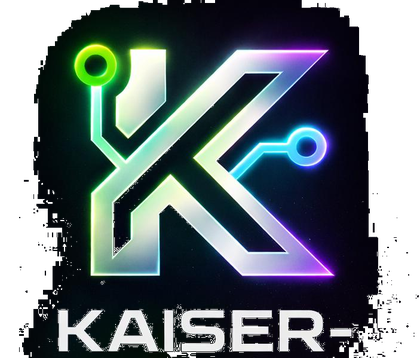

Danke.
Deine Anfrage ist angekommen.
Ich melde mich schnellstmöglich bei dir und schaue mir dein Projekt sauber an.
Zurück zur Website
Ich melde mich schnellstmöglich bei dir und schaue mir dein Projekt sauber an.
Zurück zur Website